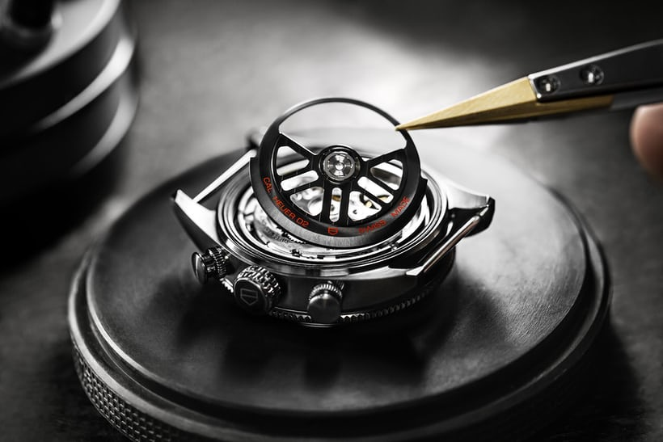
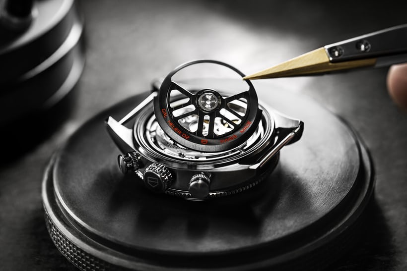
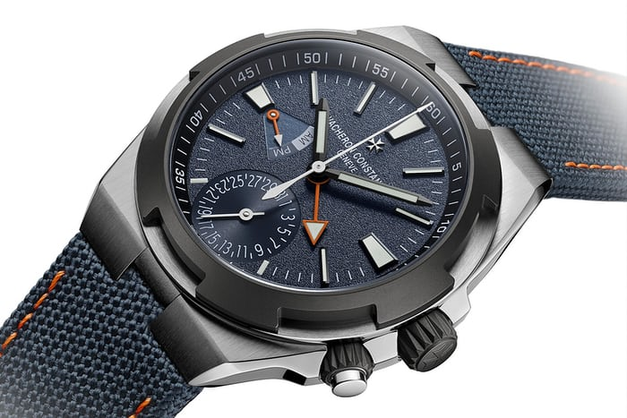
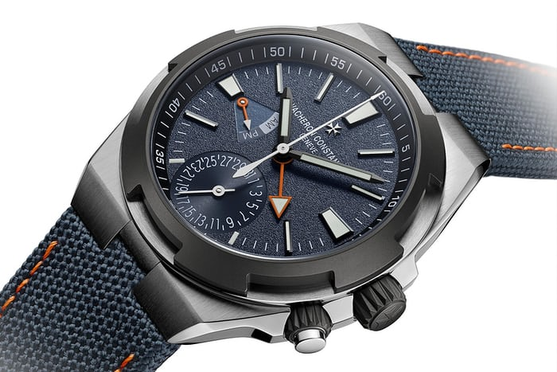

Welcome to my website about watches. In this site, I will discuss many different things about watches including watch brands, watch features and watch movements.


 



 

There are many different components of a watch. These components include the watch crown, dial, hands, movement, case, strap and face.